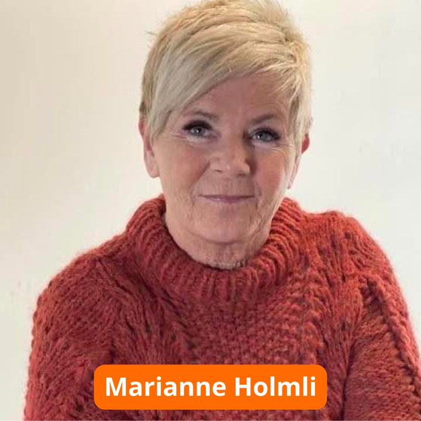
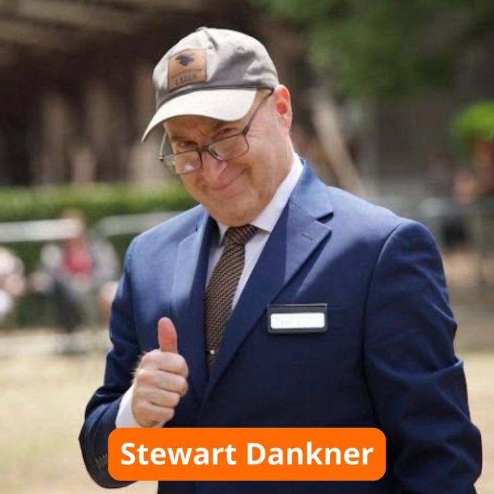
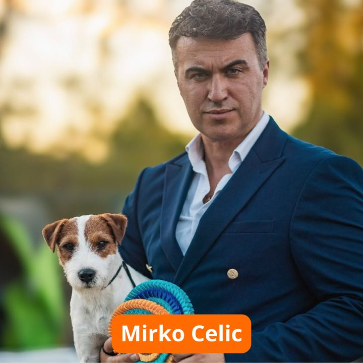
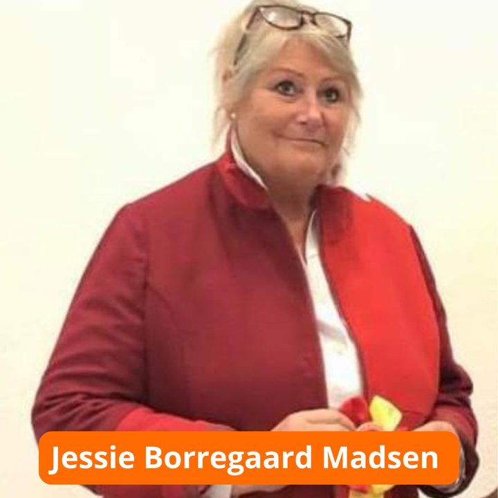
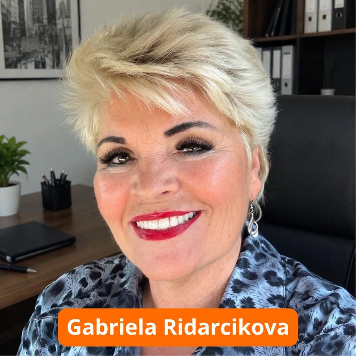
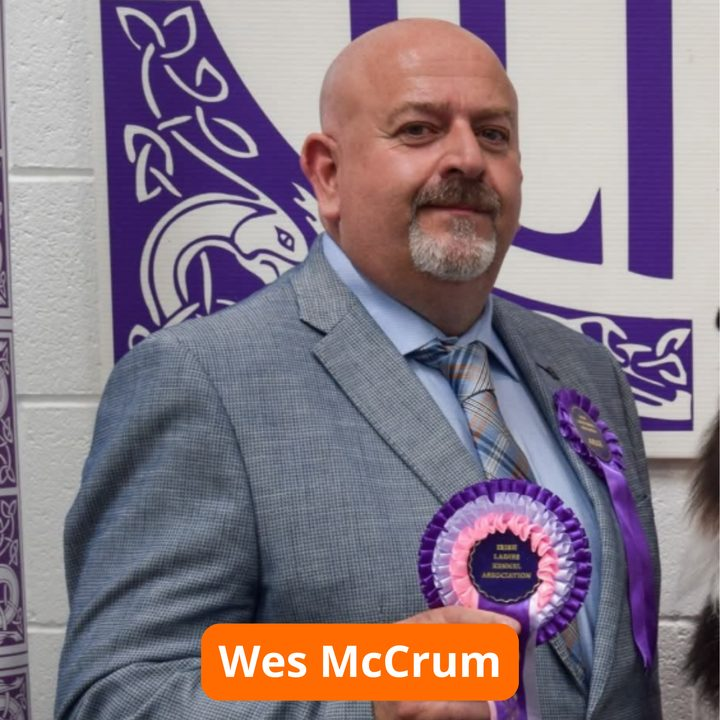
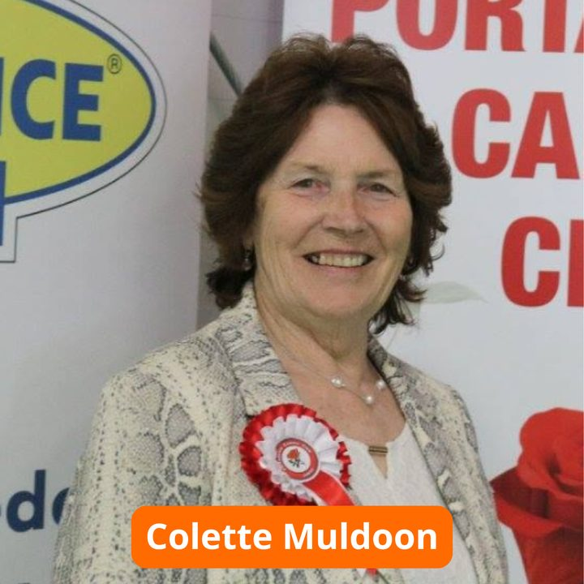
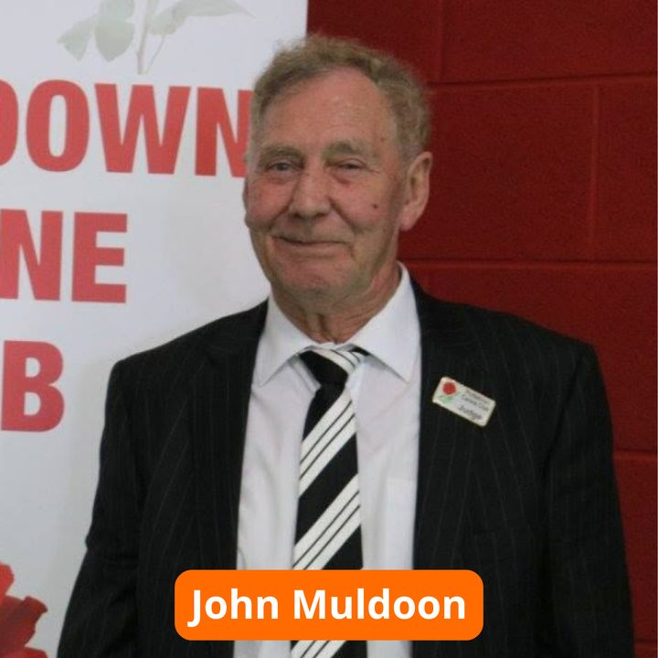
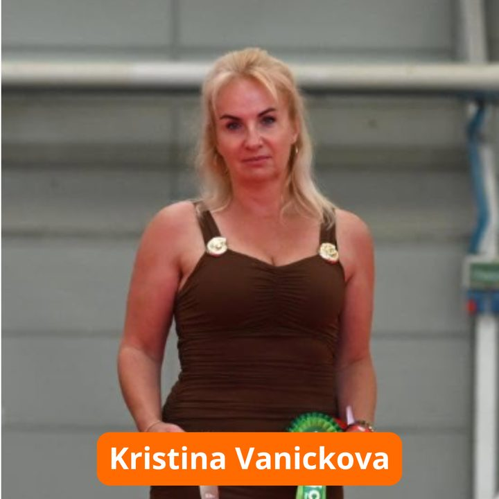

Näitused
Valga rahvuslikud näitused 20.–21.02.2027
Meie näituste kohtunikud
Kohtunikud









Tõugude jaotus ringides
| Rühm | Laupäev, 20.02.27 | Pühapäev, 21.02.27 |
|---|---|---|
| 1 | Kõik tõud — Wes McCrum (Iirimaa) | Kõik tõud — Kristina Vanickova (Tšehhi) |
| 2 | Kõik tõud — Gabriela Ridarcikova (Slovakkia) | Kõik tõud — Wes McCrum (Iirimaa) |
| 3 | Kõik tõud — Mirko Celic (Bosnia ja Hertsegoviina) | Kõik tõud — Colette Muldoon (Iirimaa) |
| 4 | Kõik tõud — Marianne Holmli (Norra) | Kõik tõud — Jessie Borregaard Madsen (Taani) |
| 5 | Kõik tõud — Kristina Vanickova (Tšehhi) | Kõik tõud — Stewart Dankner (Kanada) |
| 6 | Kõik tõud — Stewart Dankner (Kanada) | Kõik tõud — Gabriela Ridarcikova (Slovakkia) |
| 7 | Kõik tõud — Stewart Dankner (Kanada) | Kõik tõud — Jessie Borregaard Madsen (Taani) |
| 8 | Kõik tõud — Jessie Borregaard Madsen (Taani) | Kõik tõud — Marianne Holmli (Norra) |
| 9 | Kõik tõud — Colette Muldoon (Iirimaa) | Kõik tõud — Mirko Celic (Bosnia ja Hertsegoviina) |
| 10 | Kõik tõud — Marianne Holmli (Norra) | Kõik tõud — Gabriela Ridarcikova (Slovakkia) |
| Varukohtunik | Kõik tõud — John Muldoon (Iirimaa) | Kõik tõud — John Muldoon (Iirimaa) |
Lõppvõistluste kohtunikud
| Klass | Laupäev, 20.02.27 | Pühapäev, 21.02.27 |
|---|---|---|
| Parim kasvatajaklass | John Muldoon (Iirimaa) | Kristina Vanickova (Tšehhi) |
| Parim järglasteklass | Wes McCrum (Iirimaa) | Mirko Celic (Bosnia ja Hertsegoviina) |
| Parim paar | Kristina Vanickova (Tšehhi) | John Muldoon (Iirimaa) |
| Parim beebi | Jessie Borregaard Madsen (Taani) | Wes McCrum (Iirimaa) |
| Parim kutsikas | John Muldoon (Iirimaa) | Stewart Dankner (Kanada) |
| Parim veteran | Colette Muldoon (Iirimaa) | John Muldoon (Iirimaa) |
| Rühm 1 | Wes McCrum (Iirimaa) | Kristina Vanickova (Tšehhi) |
| Rühm 2 | Gabriela Ridarcikova (Slovakkia) | Wes McCrum (Iirimaa) |
| Rühm 3 | Mirko Celic (Bosnia ja Hertsegoviina) | Colette Muldoon (Iirimaa) |
| Rühm 4 | Marianne Holmli (Norra) | Jessie Borregaard Madsen (Taani) |
| Rühm 5 | Kristina Vanickova (Tšehhi) | Stewart Dankner (Kanada) |
| Rühm 6 | Stewart Dankner (Kanada) | Gabriela Ridarcikova (Slovakkia) |
| Rühm 7 | Stewart Dankner (Kanada) | Jessie Borregaard Madsen (Taani) |
| Rühm 8 | Jessie Borregaard Madsen (Taani) | Marianne Holmli (Norra) |
| Rühm 9 | Colette Muldoon (Iirimaa) | Mirko Celic (Bosnia ja Hertsegoviina) |
| Rühm 10 | Marianne Holmli (Norra) | Gabriela Ridarcikova (Slovakkia) |
| Parim juunior | Gabriela Ridarcikova (Slovakkia) | Colette Muldoon (Iirimaa) |
| Näituse kaunim koer | Stewart Dankner (Kanada) | Marianne Holmli (Norra) |
NB! Näituse toimkond jätab endale õiguse teha vajadusel muudatusi kohtunike nimekirjas!